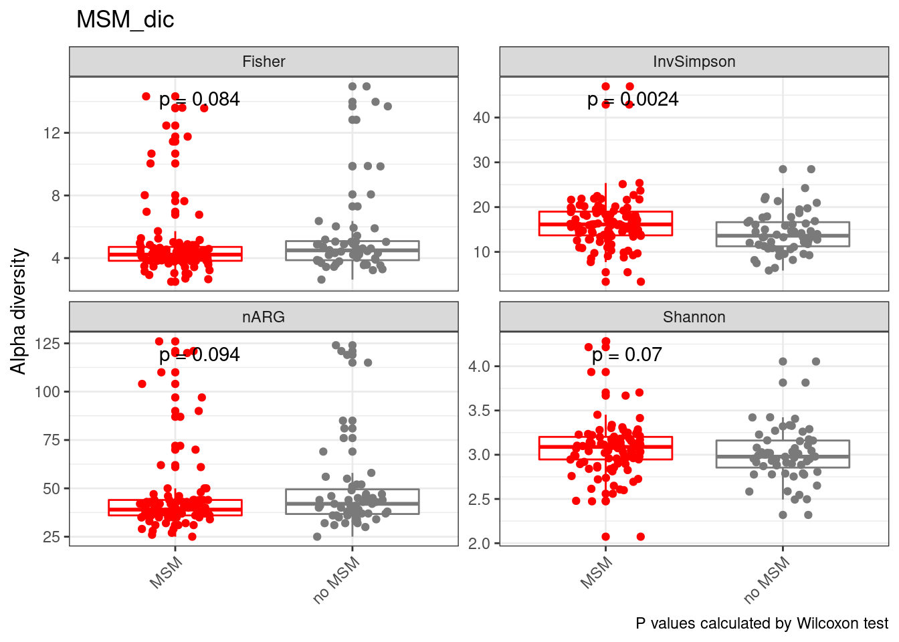
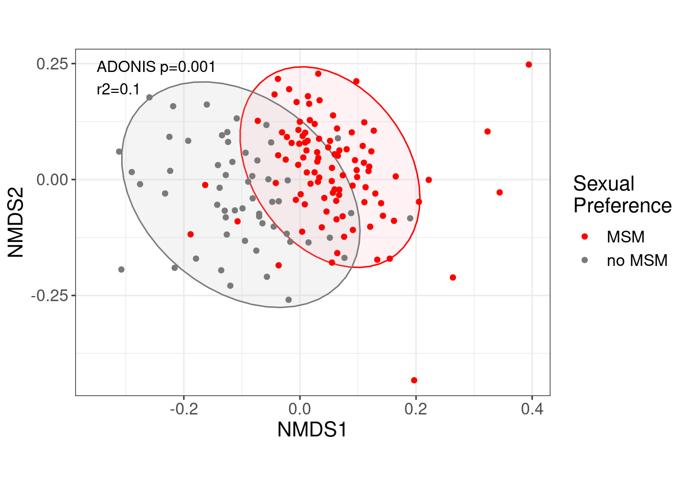
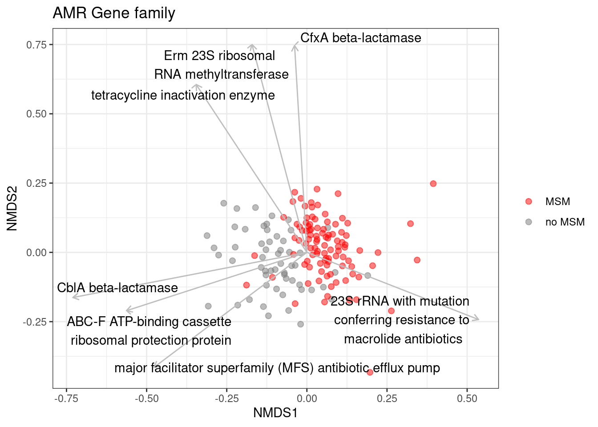

Last updated: 2023-04-24
Checks: 6 1
Knit directory: 2022_Rubio_MetaHIV/
This reproducible R Markdown analysis was created with workflowr (version 1.7.0). The Checks tab describes the reproducibility checks that were applied when the results were created. The Past versions tab lists the development history.
The R Markdown is untracked by Git. To know which version of the R Markdown file created these results, you’ll want to first commit it to the Git repo. If you’re still working on the analysis, you can ignore this warning. When you’re finished, you can run wflow_publish to commit the R Markdown file and build the HTML.
Great job! The global environment was empty. Objects defined in the global environment can affect the analysis in your R Markdown file in unknown ways. For reproduciblity it’s best to always run the code in an empty environment.
The command set.seed(20220202) was run prior to running the code in the R Markdown file. Setting a seed ensures that any results that rely on randomness, e.g. subsampling or permutations, are reproducible.
Great job! Recording the operating system, R version, and package versions is critical for reproducibility.
Nice! There were no cached chunks for this analysis, so you can be confident that you successfully produced the results during this run.
Great job! Using relative paths to the files within your workflowr project makes it easier to run your code on other machines.
Great! You are using Git for version control. Tracking code development and connecting the code version to the results is critical for reproducibility.
The results in this page were generated with repository version 52a8f6c. See the Past versions tab to see a history of the changes made to the R Markdown and HTML files.
Note that you need to be careful to ensure that all relevant files for the analysis have been committed to Git prior to generating the results (you can use wflow_publish or wflow_git_commit). workflowr only checks the R Markdown file, but you know if there are other scripts or data files that it depends on. Below is the status of the Git repository when the results were generated:
Ignored files:
Ignored: .Rhistory
Ignored: .Rproj.user/
Ignored: analysis/.Rhistory
Ignored: output/Paper/
Ignored: output/aribaData/
Ignored: output/grootData/
Untracked files:
Untracked: analysis/paper.Rmd
Untracked: code/functions_paper.R
Unstaged changes:
Modified: ECCMID_figures/alpha_div.tiff
Modified: ECCMID_figures/beta_div.tiff
Modified: analysis/07_biplots.Rmd
Modified: analysis/Riskgroup2_grouped.Rmd
Modified: output/ariba_dist.RDA
Modified: output/envfit_rpkm_amr_corlev2.csv
Modified: output/envfit_rpkm_drugclass_corlev2.csv
Modified: output/envfit_rpkm_genefamily_corlev2.csv
Modified: output/envfit_rpkm_meta_top10.csv
Modified: output/groot_dist.RDA
Modified: output/grouped_rpkm_ariba.RDA
Note that any generated files, e.g. HTML, png, CSS, etc., are not included in this status report because it is ok for generated content to have uncommitted changes.
There are no past versions. Publish this analysis with wflow_publish() to start tracking its development.
library(tidyverse)
library(kableExtra)
library(vegan)
library(ggpubr)
library(glue)
library(patchwork)
library(ggstatsplot)
library(broom)
library(ggthemes)
library(ggrepel)load("output/summarized_ariba.RDA")
load("output/ariba_dist.RDA")
load("output/grouped_rpkm_ariba.RDA")
load("output/grouped_refname_ariba.RDA")
metadata<-read_csv("data/Metadata/metadata.csv")
source("code/functions_paper.R")metadata<-metadata%>%
mutate(MSM_dic=ifelse(RiskGroup2=="msm", "MSM", "no MSM"))ariba_alpha_rpkm<-alpha_div(ariba_rpkm, ariba_counts, metadata)
alpha_div_plot_all(ariba_alpha_rpkm, MSM_dic)
No differences in alpha diversity
ariba_dist_rpkm<-ariba_dist$dist_rpkmResistome composition is different according to MSM
##ECCMID figure
dist_df<-as.data.frame(as.matrix(ariba_dist_rpkm)); dist_df$SampleID<-rownames(dist_df)
meta_dist<-inner_join(metadata, dist_df, by="SampleID")%>%
filter(!is.na(MSM_dic))
dist<-meta_dist%>%
select(all_of(.[["SampleID"]]))%>%
as.dist()
clin_var2<-meta_dist%>%pull(MSM_dic) ##clin_var vector for adonis test
test<-adonis(dist~clin_var2, permutations = 999)
ptest<-test$aov.tab$`Pr(>F)`[1]
r2test<-round(test$aov.tab$R2[1],2)
set.seed(200889)
nmds <- metaMDS(dist, trace = 0, trymax = 200)
##scores(nmds) %>%
nmds$points %>%
as_tibble(rownames = "SampleID") %>%
rename(NMDS1=MDS1, NMDS2=MDS2) %>%
inner_join(., metadata, by="SampleID") %>%
filter(!is.na(MSM_dic))%>%
ggplot(aes(x=NMDS1, y=NMDS2, color=MSM_dic, fill=MSM_dic)) +
stat_ellipse(geom="polygon", show.legend = FALSE, alpha=0.2)+
geom_point()+
coord_fixed(ratio = 0.8)+
annotate("text", x = -0.35, y = 0.22, label = glue("ADONIS p={ptest} \n r2={r2test}"), size=4, hjust=0)+
scale_color_manual(name="Sexual \nPreference",
values = c("red", "gray48"))+
scale_fill_manual(name="Sexual \nPreference",
values = c("pink", "gray80"))+
theme_bw()+
theme(text = element_text(size=15))
set.seed(200889)
cor_rpkm_genefamily<-corr_group_envfit(data_group=ariba_rpkm_genefamily, refdata_group = refname_ariba_genefamily, nmds = nmds)
cor_level<-0.2
cor_rpkm_genefamily_corlev2<-cor_rpkm_genefamily%>%filter(p.value<=0.05 & r2 > cor_level)cor_rpkm_genefamily_corlev<-cor_rpkm_genefamily_corlev2%>%
mutate(group_name = replace(group_name, group_name == "23S rRNA with mutation conferring resistance to macrolide antibiotics", "23S rRNA with mutation \n conferring resistance to \n macrolide antibiotics"),
group_name = replace(group_name, group_name=="Erm 23S ribosomal RNA methyltransferase", "Erm 23S ribosomal \nRNA methyltransferase" ),
group_name = replace(group_name, group_name=="ABC-F ATP-binding cassette ribosomal protection protein", "ABC-F ATP-binding cassette \nribosomal protection protein"))
biplot_amr_envfit(cor_rpkm_genefamily_corlev, nmds, metadata, MSM_dic, group_name)+
labs(title = "AMR Gene family")+theme(legend.title = element_blank())
amr_sig_rpkm_MSM_dic<-sig_AMR_clin_dic(ariba_rpkm, metadata, refname_all_ariba, MSM_dic)
amr_sig_rpkm_MSM_dic$sig_data%>% kable(caption="** Significant AMR accordig to Sexual preference (Ariba RPKM) **")%>%kable_paper("striped")%>%scroll_box(width = "100%", height = "500px")| ref_name | MSM | no MSM | p.adjust | log2f | ARO Term | ARO Accession | NCBI | init_final | CVTERM ID | ARO Name | Protein Accession | DNA Accession | AMR Gene Family | Drug Class | Resistance Mechanism |
|---|---|---|---|---|---|---|---|---|---|---|---|---|---|---|---|
| aadS.3004683.M72415.1.1120_1984.5568 | 8360.842 | 2576.5059 | 0.0384751 | 0.3685475 | aadS | 3004683 | M72415 . 1 | 1120_1984 | 42732 | aadS | AAA27459.1 | M72415.1 | ANT(6) | aminoglycoside antibiotic | antibiotic inactivation |
| ACI_1.3004359.AJ007350.1.239_1094.4259 | 1910.706 | 0.0000 | 0.0000000 | 3.2840019 | ACI_1 | 3004359 | AJ007350 . 1 | 239_1094 | 41531 | ACI-1 | CAB51471.1 | AJ007350.1 | ACI beta-lactamase | cephalosporin;penam;penem | antibiotic inactivation |
| APH_3____Ib.3002639.AF313472.15593_16397.545 | 0.000 | 0.0000 | 0.0019199 | -4.0251150 | APH_3____Ib | 3002639 | AF313472 | 15593_16397 | 39039 | APH(3’’)-Ib | ABK33456.1 | AF313472 | APH(3’’) | aminoglycoside antibiotic | antibiotic inactivation |
| APH_6__Id.3002660.AF024602.3155_3992.467 | 0.000 | 0.0000 | 0.0037059 | -3.6976521 | APH_6__Id | 3002660 | AF024602 | 3155_3992 | 39060 | APH(6)-Id | AAC23556.1 | AF024602 | APH(6) | aminoglycoside antibiotic | antibiotic inactivation |
| Brachyspira_hyodysenteriae_23S.3004133.NZ_CP015910.2.2512812_2515808.4183 | 6871.619 | 0.0000 | 0.0020741 | 1.5532948 | Brachyspira_hyodysenteriae_23S | 3004133 | NZ_CP015910 . 2 | 2512812_2515808 | 41260 | Brachyspira hyodysenteriae 23S rRNA with mutation conferring resistance to tylosin | NA | NZ_CP015910.2 | 23S rRNA with mutation conferring resistance to macrolide antibiotics | glycopeptide antibiotic;lincosamide antibiotic;macrolide antibiotic;phenicol antibiotic;pleuromutilin antibiotic;streptogramin antibiotic | antibiotic target alteration |
| Campylobacter_jejuni_23S.3004546.NR_076226.1.0_2912.5105 | 8194.687 | 0.0000 | 0.0244473 | 0.9741405 | Campylobacter_jejuni_23S | 3004546 | NR_076226 . 1 | 0_2912 | 42445 | Campylobacter jejuni 23S rRNA with mutation conferring resistance to erythromycin | NA | NR_076226.1 | 23S rRNA with mutation conferring resistance to macrolide antibiotics | glycopeptide antibiotic;lincosamide antibiotic;macrolide antibiotic;phenicol antibiotic;pleuromutilin antibiotic;streptogramin antibiotic | antibiotic target alteration |
| CblA_1.3002999.GQ343019.132_1023.1188 | 0.000 | 8110.8099 | 0.0000000 | -3.5680185 | CblA_1 | 3002999 | GQ343019 | 132_1023 | 39433 | CblA-1 | ACT97415.1 | GQ343019 | CblA beta-lactamase | cephalosporin | antibiotic inactivation |
| CfxA6.3003097.GQ342996.797_1793.1744 | 47665.847 | 0.0000 | 0.0000000 | 2.6166505 | CfxA6 | 3003097 | GQ342996 | 797_1793 | 39650 | CfxA6 | ACT97371.1 | GQ342996 | CfxA beta-lactamase | cephamycin | antibiotic inactivation |
| Erm_49_.3004626.MWVR01000009.1.34384_35299.5349 | 0.000 | 0.0000 | 0.0123023 | -1.6750981 | Erm_49_ | 3004626 | MWVR01000009 . 1 | 34384_35299 | 42608 | Erm(49) | OPG86592.1 | MWVR01000009.1 | Erm 23S ribosomal RNA methyltransferase | lincosamide antibiotic;macrolide antibiotic;streptogramin antibiotic | antibiotic target alteration |
| ErmB.3000375.AF242872.1.2131_2878.5828 | 11038.866 | 5420.6004 | 0.0013299 | 0.9852707 | ErmB | 3000375 | AF242872 . 1 | 2131_2878 | 36514 | ErmB | AAF86219.1 | AF242872.1 | Erm 23S ribosomal RNA methyltransferase | lincosamide antibiotic;macrolide antibiotic;streptogramin antibiotic | antibiotic target alteration |
| gyrA.3003940.AE005674.2.2352231_2354859.5265 | 0.000 | 0.0000 | 0.0441686 | -3.6136180 | gyrA | 3003940 | AE005674 . 2 | 2352231_2354859 | 40664 | Shigella flexneri gyrA conferring resistance to fluoroquinolones | AAN43827.1 | AE005674.2 | fluoroquinolone resistant gyrA | fluoroquinolone antibiotic;nybomycin | antibiotic target alteration |
| ileS.3003730.CP001840.1.1610636_1613960.5227 | 0.000 | 0.0000 | 0.0014901 | -2.9973734 | ileS | 3003730 | CP001840 . 1 | 1610636_1613960 | 40419 | Bifidobacterium bifidum ileS conferring resistance to mupirocin | ADP36409.1 | CP001840.1 | antibiotic-resistant isoleucyl-tRNA synthetase (ileS) | mupirocin | antibiotic target alteration |
| lnuC.3002837.AY928180.0_495.110 | 1767.590 | 4875.9812 | 0.0083792 | -1.1996731 | lnuC | 3002837 | AY928180 | 0_495 | 39271 | lnuC | AAY32951.1 | AY928180 | lincosamide nucleotidyltransferase (LNU) | lincosamide antibiotic | antibiotic inactivation |
| Mef_En2_.3004659.AF251288.1.794_2000.5539 | 1065.615 | 20236.5386 | 0.0000000 | -2.6256223 | Mef_En2_ | 3004659 | AF251288 . 1 | 794_2000 | 42698 | Mef(En2) | AAF74725.1 | AF251288.1 | major facilitator superfamily (MFS) antibiotic efflux pump | macrolide antibiotic | antibiotic efflux |
| mel.3000616.AF227521.1.3269_4487.5180 | 1360.409 | 9316.4831 | 0.0000000 | -2.2992182 | mel | 3000616 | AF227521 . 1 | 3269_4487 | 36910 | mel | AAL73129.1 | AF227521.1 | ABC-F ATP-binding cassette ribosomal protection protein | lincosamide antibiotic;macrolide antibiotic;oxazolidinone antibiotic;phenicol antibiotic;pleuromutilin antibiotic;streptogramin antibiotic;tetracycline antibiotic | antibiotic target protection |
| Neisseria_gonorrhoeae_23S.3004836.NR_103957.0_2910.5918 | 14440.351 | 11422.8199 | 0.0000016 | 0.4912340 | Neisseria_gonorrhoeae_23S | 3004836 | NR_103957 | 0_2910 | 42966 | Neisseria gonorrhoeae 23S rRNA with mutation conferring resistance to azithromycin | NA | NR_103957 | 23S rRNA with mutation conferring resistance to macrolide antibiotics | glycopeptide antibiotic;lincosamide antibiotic;macrolide antibiotic;phenicol antibiotic;pleuromutilin antibiotic;streptogramin antibiotic | antibiotic target alteration |
| OXA_347.3001777.JN086160.1582_2407.4583 | 0.000 | 0.0000 | 0.0014901 | -3.3021729 | OXA_347 | 3001777 | JN086160 | 1582_2407 | 38177 | OXA-347 | AET35493.1 | JN086160 | OXA beta-lactamase | carbapenem;cephalosporin;penam | antibiotic inactivation |
| rrnS.3003978.NC_005353.1.38549_40023.4108 | 4061.034 | 2044.0350 | 0.0000047 | 1.0166150 | rrnS | 3003978 | NC_005353 . 1 | 38549_40023 | 40814 | Chlamydomonas reinhardtii 16S rRNA (rrnS) mutation conferring resistance to streptomycin | NA | NC_005353.1 | 16s rRNA with mutation conferring resistance to aminoglycoside antibiotics | aminoglycoside antibiotic;glycopeptide antibiotic;glycylcycline;nucleoside antibiotic;peptide antibiotic;tetracycline antibiotic | antibiotic target alteration |
| sul2.3000412.AY055428.1.20268_21084.4745 | 0.000 | 350.2896 | 0.0000035 | -3.3581696 | sul2 | 3000412 | AY055428 . 1 | 20268_21084 | 36551 | sul2 | AAL59753.1 | AY055428.1 | sulfonamide resistant sul | sulfonamide antibiotic;sulfone antibiotic | antibiotic target replacement |
| tetQ.3000191.Z21523.0_1974.476 | 57658.540 | 85380.5750 | 0.0000000 | -0.5616921 | tetQ | 3000191 | Z21523 | 0_1974 | 36330 | tetQ | CAA79727.1 | Z21523 | tetracycline-resistant ribosomal protection protein | tetracycline antibiotic | antibiotic target protection |
| tetW.3000194.AJ222769.3.3686_5606.5145 | 24119.009 | 14357.6147 | 0.0051351 | 0.7682790 | tetW | 3000194 | AJ222769 . 3 | 3686_5606 | 36333 | tetW | CAA10975.1 | AJ222769.3 | tetracycline-resistant ribosomal protection protein | tetracycline antibiotic | antibiotic target protection |
| Thermus_thermophilus_23s.3005083.AE017221.1.1534489_1537382.6116 | 15078.295 | 12043.2161 | 0.0000553 | 0.3813568 | Thermus_thermophilus_23s | 3005083 | AE017221 . 1 | 1534489_1537382 | 43292 | Thermus thermophilus 23s rRNA conferring resistance to pleuromutilin antibiotics | NA | AE017221.1 | 23S rRNA with mutation conferring resistance to pleuromutilin antibiotics | glycopeptide antibiotic;lincosamide antibiotic;macrolide antibiotic;phenicol antibiotic;pleuromutilin antibiotic;streptogramin antibiotic | antibiotic target alteration |
write_excel_csv(amr_sig_rpkm_MSM_dic$sig_data, "output/Paper/amr__sexualpreference.xlsx")drugclass_sig_rpkm_MSM_dic<-sig_group_clin_dic(ariba_rpkm_drugclass, metadata, refname_ariba_drugclass, MSM_dic)
drugclass_sig_rpkm_MSM_dic$sig_data%>% kable(caption="**Significant Drug Classes, MSM (Ariba RPKM)**")%>%kable_paper("striped")%>%scroll_box(width = "100%", height = "500px")| group_name | MSM | no MSM | p.adjust | log2f | AMR Gene Family | ARO Name |
|---|---|---|---|---|---|---|
| cephalosporin | 3454.819 | 10923.9399 | 0.0000099 | -1.1652114 | CblA beta-lactamase;ACI beta-lactamase;OXA beta-lactamase;resistance-nodulation-cell division (RND) antibiotic efflux pump;CTX-M beta-lactamase;cepA beta-lactamase;EC beta-lactamase;ATP-binding cassette (ABC) antibiotic efflux pump;major facilitator superfamily (MFS) antibiotic efflux pump;ampC-type beta-lactamase;General Bacterial Porin with reduced permeability to beta-lactams;ACC beta-lactamase;SHV beta-lactamase;TEM beta-lactamase;Penicillin-binding protein mutations conferring resistance to beta-lactam antibiotics;ACT beta-lactamase | CblA-1;ACI-1;OXA-660;AcrE;AcrF;AcrS;CTX-M-88;CepA-44;EC-5;OXA-347;TolC;Escherichia coli acrA;acrB;Escherichia coli acrR with mutation conferring multidrug antibiotic resistance;Escherichia coli ampH beta-lactamase;porin OmpC;Escherichia coli soxR with mutation conferring antibiotic resistance;ACC-1d;Klebsiella aerogenes Omp36;Klebsiella pneumoniae KpnE;Klebsiella pneumoniae KpnF;Klebsiella pneumoniae KpnG;Klebsiella pneumoniae OmpK35;Klebsiella pneumoniae OmpK36;Klebsiella pneumoniae OmpK37;OmpA;SHV-100;Klebsiella pneumoniae acrA;Enterobacter cloacae acrA;Klebsiella pneumoniae acrR with mutation conferring multidrug antibiotic resistance;Klebsiella pneumoniae ramR mutants;TEM-124;TEM-37;cepA;Escherichia coli soxS with mutation conferring antibiotic resistance;CepA-29;H-NS;Escherichia coli marR mutant conferring antibiotic resistance;Escherichia coli ompF with mutation conferring resistance to beta-lactam antibiotics;Streptococcus pneumoniae PBP2b conferring resistance to amoxicillin;ACT-17;EC-15;Escherichia coli ampC1 beta-lactamase;marA;CepA-49;ACC-1;OXA-63;TEM-82;OXA-471;TEM-93;EC-8;TEM-95;TEM-34;OXA-472;Escherichia coli ampC beta-lactamase;OXA-786;ACT-45;EC-16;ACT-4;ACT-7;TEM-187;TEM-90;ACT-38;ACT-39;SHV-70;EC-19;TEM-40 |
| cephamycin | 90796.592 | 60353.1612 | 0.0059989 | 0.4282385 | CfxA beta-lactamase;resistance-nodulation-cell division (RND) antibiotic efflux pump;ATP-binding cassette (ABC) antibiotic efflux pump;major facilitator superfamily (MFS) antibiotic efflux pump;General Bacterial Porin with reduced permeability to beta-lactams;Penicillin-binding protein mutations conferring resistance to beta-lactam antibiotics;ACT beta-lactamase;CMY beta-lactamase | CfxA2;CfxA6;CfxA3;AcrE;AcrF;AcrS;TolC;porin OmpC;Klebsiella aerogenes Omp36;Klebsiella pneumoniae OmpK35;Klebsiella pneumoniae OmpK36;Klebsiella pneumoniae OmpK37;OmpA;CfxA5;Escherichia coli soxS with mutation conferring antibiotic resistance;H-NS;Escherichia coli ompF with mutation conferring resistance to beta-lactam antibiotics;Streptococcus pneumoniae PBP2b conferring resistance to amoxicillin;ACT-17;marA;CfxA4;ACT-45;ACT-4;ACT-7;ACT-38;ACT-39;CMY-90;CMY-169 |
| glycopeptide antibiotic | 225702.087 | 205457.1481 | 0.0141870 | 0.1615090 | 23S rRNA with mutation conferring resistance to macrolide antibiotics;16s rRNA with mutation conferring resistance to aminoglycoside antibiotics;23S rRNA with mutation conferring resistance to linezolid antibiotics;23S rRNA with mutation conferring resistance to streptogramins antibiotics;23S rRNA with mutation conferring resistance to pleuromutilin antibiotics;23S rRNA with mutation conferring resistance to oxazolidinone antibiotics;glycopeptide resistance gene cluster;vanW;16S rRNA with mutation conferring resistance to tetracycline derivatives;vancomycin-resistant beta prime subunit of RNA polymerase (rpoC);16s rRNA with mutation conferring resistance to peptide antibiotics;van ligase;vanT;vanXY;23s rRNA with mutation conferring resistance to aminoglycoside antibiotics;vanS | Clostridioides difficile 23S rRNA with mutation conferring resistance to erythromycin and clindamycin;Moraxella catarrhalis 23S rRNA with mutation conferring resistance to macrolide antibiotics;Mycobacteroides chelonae 16S rRNA mutation conferring resistance to neomycin;Mycoplasma hominis 23S rRNA with mutation conferring resistance to macrolide antibiotics;Neisseria gonorrhoeae 23S rRNA with mutation conferring resistance to azithromycin;Neisseria meningitidis 16S rRNA mutation conferring resistance to spectinomycin;Pasteurella multocida 16S rRNA mutation conferring resistance to spectinomycin;Staphylococcus aureus 23S rRNA with mutation conferring resistance to linezolid;Streptococcus pneumoniae 23S rRNA mutation conferring resistance to macrolides and streptogramins antibiotics;Thermus thermophilus 23s rRNA conferring resistance to pleuromutilin antibiotics;Chlamydomonas reinhardtii 16S rRNA (rrnS) mutation conferring resistance to streptomycin;Escherichia coli 16S rRNA (rrsH) mutation conferring resistance to spectinomycin;Campylobacter jejuni 23S rRNA with mutation conferring resistance to erythromycin;Chlamydia trachomatis 23S rRNA with mutation conferring resistance to macrolide antibiotics;Escherichia coli 23S rRNA with mutation conferring resistance to oxazolidinone antibiotics;Mycobacterium intracellulare 23S rRNA with mutation conferring resistance to azithromycin;vanWG;Helicobacter pylori 16S rRNA mutation conferring resistance to tetracycline;Cutibacterium acnes 16S rRNA mutation conferring resistance to tetracycline;Brachyspira hyodysenteriae 23S rRNA with mutation conferring resistance to tylosin;Chlamydophila psittaci 16S rRNA mutation conferring resistance to spectinomycin;Helicobacter pylori 23S rRNA with mutation conferring resistance to clarithromycin;Mycoplasma fermentans 23S rRNA with mutation conferring resistance to macrolide antibiotics;Streptomyces ambofaciens 23S rRNA with mutation conferring resistance to macrolide antibiotics;Clostridioides difficile rpoC with mutation conferring resistance to vancomycin;Escherichia coli 16S rRNA (rrsB) mutation conferring resistance to tetracycline;Salmonella enterica 16S rRNA (rrsD) mutation conferring resistance to spectinomycin;Mycoplasma genitalium 23S rRNA mutations confers resistance to fluoroquinolone and macrolide antibiotics;Escherichia coli 16S rRNA (rrsC) mutation conferring resistance to kasugamicin;Mycolicibacterium smegmatis 16S rRNA (rrsB) mutation conferring resistance to viomycin;Mycobacterium tuberculosis 16S rRNA mutation conferring resistance to capreomycin;Mycolicibacterium smegmatis 23S rRNA with mutation conferring resistance to clarithromycin;Mycolicibacterium smegmatis 16S rRNA (rrsB) mutation conferring resistance to hygromycin B;vanG;vanTG;vanXYG;Mycobacterium avium 23S rRNA with mutation conferring resistance to clarithromycin;Neisseria gonorrhoeae 16S rRNA mutation conferring resistance to spectinomycin;Mycoplasma gallisepticum 23S rRNA mutation conferring resistance to pleuromutilin antibiotics;Mycobacterium tuberculosis 23S rRNA mutation conferring resistance to capreomycin;Propionibacteria 23S rRNA with mutation conferring resistance to macrolide antibiotics;Mycobacteroides abscessus 23S rRNA with mutation conferring resistance to clarithromycin;Mycobacterium kansasii 23S rRNA with mutation conferring resistance to clarithromycin;Mycoplasma pneumoniae 23S rRNA mutation conferring resistance to erythromycin;Mycobacteroides chelonae 23S rRNA with mutation conferring resistance to clarithromycin;vanSD;Mycobacteroides abscessus 16S rRNA mutation conferring resistance to gentamicin;Chlamydomonas reinhardtii 23S rRNA with mutation conferring resistance to erythromycin |
| mupirocin | 0.000 | 0.0000 | 0.0003414 | -2.9973734 | antibiotic-resistant isoleucyl-tRNA synthetase (ileS) | Bifidobacterium bifidum ileS conferring resistance to mupirocin |
| oxazolidinone antibiotic | 24935.318 | 42085.4221 | 0.0005165 | -0.6228838 | 23S rRNA with mutation conferring resistance to linezolid antibiotics;ABC-F ATP-binding cassette ribosomal protection protein;23S rRNA with mutation conferring resistance to oxazolidinone antibiotics;ATP-binding cassette (ABC) antibiotic efflux pump;Cfr 23S ribosomal RNA methyltransferase | Staphylococcus aureus 23S rRNA with mutation conferring resistance to linezolid;mel;Escherichia coli 23S rRNA with mutation conferring resistance to oxazolidinone antibiotics;mlaD;mlaF;msrC;lsaA;lsaE;lsaC;eatAv;cfr(B) |
| penam | 2356.076 | 449.2289 | 0.0001190 | 0.4241101 | ACI beta-lactamase;OXA beta-lactamase;resistance-nodulation-cell division (RND) antibiotic efflux pump;ATP-binding cassette (ABC) antibiotic efflux pump;major facilitator superfamily (MFS) antibiotic efflux pump;ampC-type beta-lactamase;General Bacterial Porin with reduced permeability to beta-lactams;ACC beta-lactamase;LEN beta-lactamase;SHV beta-lactamase;TEM beta-lactamase;Penicillin-binding protein mutations conferring resistance to beta-lactam antibiotics;ACT beta-lactamase | ACI-1;OXA-660;AcrE;AcrF;AcrS;CRP;OXA-347;TolC;Escherichia coli acrA;acrB;Escherichia coli acrR with mutation conferring multidrug antibiotic resistance;Escherichia coli ampH beta-lactamase;evgA;evgS;gadW;gadX;mdtE;mdtF;porin OmpC;Escherichia coli soxR with mutation conferring antibiotic resistance;ACC-1d;Klebsiella aerogenes Omp36;Klebsiella pneumoniae KpnG;Klebsiella pneumoniae OmpK35;Klebsiella pneumoniae OmpK36;Klebsiella pneumoniae OmpK37;LEN-15;OmpA;SHV-100;Klebsiella pneumoniae acrA;Enterobacter cloacae acrA;Klebsiella pneumoniae acrR with mutation conferring multidrug antibiotic resistance;Klebsiella pneumoniae ramR mutants;TEM-124;TEM-37;Escherichia coli soxS with mutation conferring antibiotic resistance;H-NS;Escherichia coli marR mutant conferring antibiotic resistance;Escherichia coli ompF with mutation conferring resistance to beta-lactam antibiotics;Streptococcus pneumoniae PBP2b conferring resistance to amoxicillin;ACT-17;Escherichia coli ampC1 beta-lactamase;marA;ACC-1;OXA-63;TEM-82;OXA-471;TEM-93;TEM-95;TEM-34;OXA-472;Escherichia coli ampC beta-lactamase;OXA-786;ACT-45;ACT-4;ACT-7;TEM-187;TEM-90;ACT-38;ACT-39;SHV-70;TEM-40 |
| penem | 2144.607 | 0.0000 | 0.0000000 | 1.2704093 | ACI beta-lactamase;ATP-binding cassette (ABC) antibiotic efflux pump;major facilitator superfamily (MFS) antibiotic efflux pump;resistance-nodulation-cell division (RND) antibiotic efflux pump;General Bacterial Porin with reduced permeability to beta-lactams;LEN beta-lactamase;TEM beta-lactamase | ACI-1;TolC;porin OmpC;Klebsiella aerogenes Omp36;Klebsiella pneumoniae KpnG;Klebsiella pneumoniae OmpK35;Klebsiella pneumoniae OmpK36;Klebsiella pneumoniae OmpK37;LEN-15;OmpA;TEM-124;TEM-37;Escherichia coli soxS with mutation conferring antibiotic resistance;Escherichia coli ompF with mutation conferring resistance to beta-lactam antibiotics;marA;TEM-82;TEM-93;TEM-95;TEM-34;TEM-187;TEM-90;TEM-40 |
| sulfonamide antibiotic | 0.000 | 637.5348 | 0.0000238 | -2.5880748 | sulfonamide resistant sul;sulfonamide resistant dihydropteroate synthase folP | sul2;sul1;Escherichia coli folP with mutation conferring resistance to sulfonamides;sul3 |
| sulfone antibiotic | 0.000 | 637.5348 | 0.0000238 | -2.5880748 | sulfonamide resistant sul;sulfonamide resistant dihydropteroate synthase folP | sul2;sul1;Escherichia coli folP with mutation conferring resistance to sulfonamides;sul3 |
| tetracycline antibiotic | 224443.474 | 242701.6681 | 0.0372447 | -0.1058300 | 16s rRNA with mutation conferring resistance to aminoglycoside antibiotics;ABC-F ATP-binding cassette ribosomal protection protein;tetracycline-resistant ribosomal protection protein;tetracycline inactivation enzyme;major facilitator superfamily (MFS) antibiotic efflux pump;16S rRNA with mutation conferring resistance to tetracycline derivatives;ATP-binding cassette (ABC) antibiotic efflux pump;resistance-nodulation-cell division (RND) antibiotic efflux pump;16s rRNA with mutation conferring resistance to peptide antibiotics;General Bacterial Porin with reduced permeability to beta-lactams;Sugar Porin (SP) | Mycobacteroides chelonae 16S rRNA mutation conferring resistance to neomycin;Neisseria meningitidis 16S rRNA mutation conferring resistance to spectinomycin;Pasteurella multocida 16S rRNA mutation conferring resistance to spectinomycin;mel;Chlamydomonas reinhardtii 16S rRNA (rrnS) mutation conferring resistance to streptomycin;Escherichia coli 16S rRNA (rrsH) mutation conferring resistance to spectinomycin;tet32;tetO;tetQ;tetW;tetX;tet(40);Tet(X4);tetM;tet(44);Helicobacter pylori 16S rRNA mutation conferring resistance to tetracycline;Cutibacterium acnes 16S rRNA mutation conferring resistance to tetracycline;Chlamydophila psittaci 16S rRNA mutation conferring resistance to spectinomycin;Tet(X1);tetA(46);tetB(46);tetB(P);AcrS;TolC;Escherichia coli acrA;acrB;Escherichia coli acrR with mutation conferring multidrug antibiotic resistance;emrK;evgA;evgS;Escherichia coli 16S rRNA (rrsB) mutation conferring resistance to tetracycline;Escherichia coli soxR with mutation conferring antibiotic resistance;Klebsiella pneumoniae KpnE;Klebsiella pneumoniae KpnF;Klebsiella pneumoniae acrA;Enterobacter cloacae acrA;Klebsiella pneumoniae acrR with mutation conferring multidrug antibiotic resistance;oqxA;oqxB;Klebsiella pneumoniae ramR mutants;Salmonella enterica 16S rRNA (rrsD) mutation conferring resistance to spectinomycin;tet(A);Escherichia coli 16S rRNA (rrsC) mutation conferring resistance to kasugamicin;Escherichia coli mdfA;Mycolicibacterium smegmatis 16S rRNA (rrsB) mutation conferring resistance to viomycin;Escherichia coli soxS with mutation conferring antibiotic resistance;tetR;Mycobacterium tuberculosis 16S rRNA mutation conferring resistance to capreomycin;tetA(P);Mycolicibacterium smegmatis 16S rRNA (rrsB) mutation conferring resistance to hygromycin B;msrC;Neisseria gonorrhoeae 16S rRNA mutation conferring resistance to spectinomycin;tet(C);tet(W/N/W);Escherichia coli LamB;H-NS;emrY;Escherichia coli marR mutant conferring antibiotic resistance;lsaA;marA;tetS;lsaE;lsaC;tet36;Mycobacteroides abscessus 16S rRNA mutation conferring resistance to gentamicin;tet(B);eatAv;tet(L);tet(D);Tet(X6) |
drugclass<-drugclass_sig_rpkm_MSM_dic$sig_data
write_excel_csv(drugclass, "output/Paper/drugclass_sexualpreference.xlsx")genefamily_sexualp<-sig_group_clin_dic(ariba_rpkm_genefamily, metadata, refname_ariba_genefamily, MSM_dic)
genefamily_sexualp$sig_data%>%
kable()%>%kable_paper("striped")%>%scroll_box(width = "100%", height = "500px")| group_name | MSM | no MSM | p.adjust | log2f | ARO Name | Drug Class |
|---|---|---|---|---|---|---|
| 16s rRNA with mutation conferring resistance to aminoglycoside antibiotics | 71204.295 | 59608.5215 | 0.0401656 | 0.2694697 | Mycobacteroides chelonae 16S rRNA mutation conferring resistance to neomycin;Neisseria meningitidis 16S rRNA mutation conferring resistance to spectinomycin;Pasteurella multocida 16S rRNA mutation conferring resistance to spectinomycin;Chlamydomonas reinhardtii 16S rRNA (rrnS) mutation conferring resistance to streptomycin;Escherichia coli 16S rRNA (rrsH) mutation conferring resistance to spectinomycin;Chlamydophila psittaci 16S rRNA mutation conferring resistance to spectinomycin;Salmonella enterica 16S rRNA (rrsD) mutation conferring resistance to spectinomycin;Escherichia coli 16S rRNA (rrsC) mutation conferring resistance to kasugamicin;Mycobacterium tuberculosis 16S rRNA mutation conferring resistance to capreomycin;Mycolicibacterium smegmatis 16S rRNA (rrsB) mutation conferring resistance to hygromycin B;Neisseria gonorrhoeae 16S rRNA mutation conferring resistance to spectinomycin;Mycobacteroides abscessus 16S rRNA mutation conferring resistance to gentamicin | aminoglycoside antibiotic;glycopeptide antibiotic;glycylcycline;nucleoside antibiotic;peptide antibiotic;tetracycline antibiotic |
| 23S rRNA with mutation conferring resistance to macrolide antibiotics | 83245.139 | 66530.6215 | 0.0000569 | 0.3141461 | Clostridioides difficile 23S rRNA with mutation conferring resistance to erythromycin and clindamycin;Moraxella catarrhalis 23S rRNA with mutation conferring resistance to macrolide antibiotics;Mycoplasma hominis 23S rRNA with mutation conferring resistance to macrolide antibiotics;Neisseria gonorrhoeae 23S rRNA with mutation conferring resistance to azithromycin;Campylobacter jejuni 23S rRNA with mutation conferring resistance to erythromycin;Chlamydia trachomatis 23S rRNA with mutation conferring resistance to macrolide antibiotics;Mycobacterium intracellulare 23S rRNA with mutation conferring resistance to azithromycin;Brachyspira hyodysenteriae 23S rRNA with mutation conferring resistance to tylosin;Helicobacter pylori 23S rRNA with mutation conferring resistance to clarithromycin;Mycoplasma fermentans 23S rRNA with mutation conferring resistance to macrolide antibiotics;Streptomyces ambofaciens 23S rRNA with mutation conferring resistance to macrolide antibiotics;Mycoplasma genitalium 23S rRNA mutations confers resistance to fluoroquinolone and macrolide antibiotics;Mycolicibacterium smegmatis 23S rRNA with mutation conferring resistance to clarithromycin;Mycobacterium avium 23S rRNA with mutation conferring resistance to clarithromycin;Propionibacteria 23S rRNA with mutation conferring resistance to macrolide antibiotics;Mycobacteroides abscessus 23S rRNA with mutation conferring resistance to clarithromycin;Mycobacterium kansasii 23S rRNA with mutation conferring resistance to clarithromycin;Mycoplasma pneumoniae 23S rRNA mutation conferring resistance to erythromycin;Mycobacteroides chelonae 23S rRNA with mutation conferring resistance to clarithromycin;Chlamydomonas reinhardtii 23S rRNA with mutation conferring resistance to erythromycin | glycopeptide antibiotic;lincosamide antibiotic;macrolide antibiotic;phenicol antibiotic;pleuromutilin antibiotic;streptogramin antibiotic |
| 23S rRNA with mutation conferring resistance to pleuromutilin antibiotics | 15173.492 | 12043.2161 | 0.0000435 | 0.3772313 | Thermus thermophilus 23s rRNA conferring resistance to pleuromutilin antibiotics;Mycoplasma gallisepticum 23S rRNA mutation conferring resistance to pleuromutilin antibiotics | glycopeptide antibiotic;lincosamide antibiotic;macrolide antibiotic;phenicol antibiotic;pleuromutilin antibiotic;streptogramin antibiotic |
| ABC-F ATP-binding cassette ribosomal protection protein | 1363.719 | 9316.4831 | 0.0000000 | -2.2979583 | mel;msrC;lsaA;lsaE;lsaC;eatAv | lincosamide antibiotic;macrolide antibiotic;oxazolidinone antibiotic;phenicol antibiotic;pleuromutilin antibiotic;streptogramin antibiotic;tetracycline antibiotic |
| ACI beta-lactamase | 1910.706 | 0.0000 | 0.0000000 | 3.2840019 | ACI-1 | cephalosporin;penam;penem |
| ANT(3’’) | 0.000 | 0.0000 | 0.0312037 | -1.7972431 | aadA24;aadA2;aadA8;aadA;aadA5;aadA13;aadA17 | aminoglycoside antibiotic |
| ANT(6) | 8748.864 | 3206.5623 | 0.0274607 | 0.3435338 | ANT(6)-Ia;aadS;ANT(6)-Ib | aminoglycoside antibiotic |
| antibiotic-resistant isoleucyl-tRNA synthetase (ileS) | 0.000 | 0.0000 | 0.0007626 | -2.9973734 | Bifidobacterium bifidum ileS conferring resistance to mupirocin | mupirocin |
| APH(3’’) | 0.000 | 0.0000 | 0.0009406 | -4.0251150 | APH(3’’)-Ib | aminoglycoside antibiotic |
| APH(6) | 0.000 | 0.0000 | 0.0018674 | -3.6976521 | APH(6)-Id | aminoglycoside antibiotic |
| CblA beta-lactamase | 0.000 | 8110.8099 | 0.0000000 | -3.5680185 | CblA-1 | cephalosporin |
| cepA beta-lactamase | 0.000 | 0.0000 | 0.0058681 | -1.6966040 | CepA-44;cepA;CepA-29;CepA-49 | cephalosporin |
| CfxA beta-lactamase | 90568.590 | 59551.9199 | 0.0130080 | 0.4406585 | CfxA2;CfxA6;CfxA3;CfxA5;CfxA4 | cephamycin |
| lincosamide nucleotidyltransferase (LNU) | 1767.590 | 4875.9812 | 0.0058681 | -1.1843345 | lnuC;LnuP | lincosamide antibiotic |
| major facilitator superfamily (MFS) antibiotic efflux pump | 4693.003 | 25048.6114 | 0.0000000 | -1.8279117 | Mef(En2);tet(40);emrA;emrK;mdtN;mdtO;Klebsiella pneumoniae KpnE;Klebsiella pneumoniae KpnF;Klebsiella pneumoniae KpnG;tet(A);Escherichia coli mdfA;tetR;tetA(P);efmA;qacE;tet(C);emrB;emrR;emrY;mdtG;mdtH;mdtM;mdtP;qacEdelta1;tet(B);mef(B);tet(L);tet(D) | macrolide antibiotic;tetracycline antibiotic;fluoroquinolone antibiotic;acridine dye;disinfecting agents and intercalating dyes;nucleoside antibiotic;aminoglycoside antibiotic;cephalosporin;peptide antibiotic;rifamycin antibiotic;carbapenem;penam;penem;benzalkonium chloride;rhodamine;fosfomycin;lincosamide antibiotic;phenicol antibiotic |
| sulfonamide resistant sul | 0.000 | 637.5348 | 0.0000010 | -3.2267799 | sul2;sul1;sul3 | sulfonamide antibiotic;sulfone antibiotic |
| tetracycline-resistant ribosomal protection protein | 102751.422 | 120759.4755 | 0.0173541 | -0.1598603 | tet32;tetO;tetQ;tetW;tetM;tet(44);tetB(P);tet(W/N/W);tetS;tet36 | tetracycline antibiotic |
write_excel_csv(genefamily_sexualp$sig_data, "output/Paper/genefamily__sexualpreference.xlsx")
sessionInfo()R version 4.1.2 (2021-11-01)
Platform: x86_64-pc-linux-gnu (64-bit)
Running under: Ubuntu 20.04.3 LTS
Matrix products: default
BLAS: /usr/lib/x86_64-linux-gnu/blas/libblas.so.3.9.0
LAPACK: /usr/lib/x86_64-linux-gnu/lapack/liblapack.so.3.9.0
locale:
[1] LC_CTYPE=es_ES.UTF-8 LC_NUMERIC=C
[3] LC_TIME=es_ES.UTF-8 LC_COLLATE=es_ES.UTF-8
[5] LC_MONETARY=es_ES.UTF-8 LC_MESSAGES=es_ES.UTF-8
[7] LC_PAPER=es_ES.UTF-8 LC_NAME=C
[9] LC_ADDRESS=C LC_TELEPHONE=C
[11] LC_MEASUREMENT=es_ES.UTF-8 LC_IDENTIFICATION=C
attached base packages:
[1] stats graphics grDevices utils datasets methods base
other attached packages:
[1] ggrepel_0.9.1 ggthemes_4.2.4 broom_1.0.1 ggstatsplot_0.9.4
[5] patchwork_1.1.1 glue_1.6.2 ggpubr_0.4.0 vegan_2.5-7
[9] lattice_0.20-45 permute_0.9-7 kableExtra_1.3.4 forcats_0.5.1
[13] stringr_1.4.0 dplyr_1.0.8 purrr_0.3.4 readr_2.1.2
[17] tidyr_1.2.0 tibble_3.1.6 ggplot2_3.3.5 tidyverse_1.3.1
loaded via a namespace (and not attached):
[1] nlme_3.1-157 fs_1.5.2 bit64_4.0.5
[4] lubridate_1.8.0 insight_0.18.2 webshot_0.5.2
[7] httr_1.4.2 rprojroot_2.0.2 tools_4.1.2
[10] backports_1.4.1 bslib_0.3.1 utf8_1.2.2
[13] R6_2.5.1 statsExpressions_1.3.3 DBI_1.1.2
[16] mgcv_1.8-38 colorspace_2.0-3 withr_2.5.0
[19] tidyselect_1.1.2 bit_4.0.4 compiler_4.1.2
[22] git2r_0.30.1 performance_0.9.2 cli_3.3.0
[25] rvest_1.0.2 xml2_1.3.3 labeling_0.4.2
[28] bayestestR_0.12.1 sass_0.4.1 scales_1.2.1
[31] systemfonts_1.0.4 digest_0.6.29 rmarkdown_2.13
[34] svglite_2.1.0 pkgconfig_2.0.3 htmltools_0.5.2
[37] highr_0.9 dbplyr_2.1.1 fastmap_1.1.0
[40] rlang_1.0.2 readxl_1.3.1 rstudioapi_0.13
[43] farver_2.1.0 jquerylib_0.1.4 generics_0.1.2
[46] jsonlite_1.8.0 vroom_1.5.7 car_3.0-12
[49] magrittr_2.0.2 parameters_0.18.2 Matrix_1.4-0
[52] Rcpp_1.0.8.3 munsell_0.5.0 fansi_1.0.3
[55] abind_1.4-5 lifecycle_1.0.1 stringi_1.7.6
[58] yaml_2.3.5 carData_3.0-5 MASS_7.3-56
[61] paletteer_1.4.1 grid_4.1.2 parallel_4.1.2
[64] promises_1.2.0.1 crayon_1.5.1 haven_2.4.3
[67] splines_4.1.2 hms_1.1.1 zeallot_0.1.0
[70] knitr_1.38 pillar_1.7.0 ggsignif_0.6.3
[73] reprex_2.0.1 evaluate_0.15 modelr_0.1.8
[76] vctrs_0.3.8 tzdb_0.2.0 httpuv_1.6.5
[79] cellranger_1.1.0 gtable_0.3.0 rematch2_2.1.2
[82] datawizard_0.5.1 assertthat_0.2.1 xfun_0.30
[85] correlation_0.8.2 rstatix_0.7.0 later_1.3.0
[88] viridisLite_0.4.0 workflowr_1.7.0 cluster_2.1.2
[91] ellipsis_0.3.2